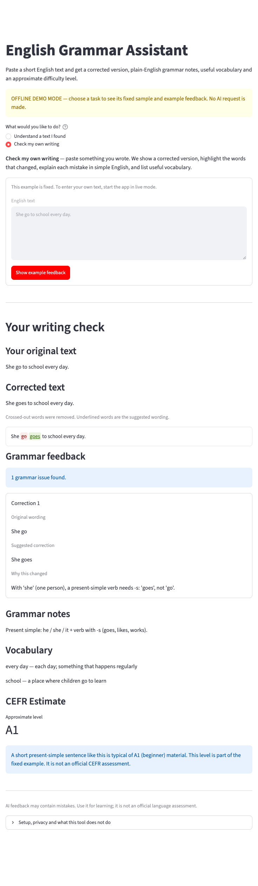
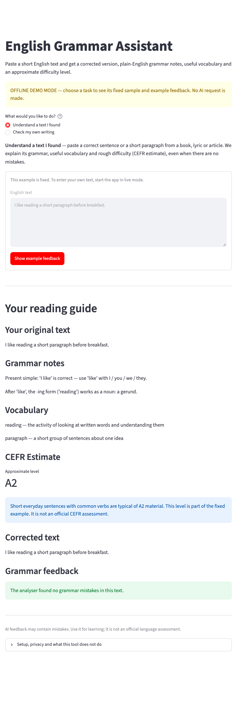

Who it helps
The assistant is for people learning everyday English independently. A short passage may be hard to understand even when its grammar is correct. A corrected sentence can also leave a learner unsure why the original wording changed. The app gives explanations for both situations.
Understand a text I found
Paste a short English passage. Grammar notes, contextual vocabulary meanings and an approximate CEFR difficulty appear before corrections.
Check my own writing
Paste a sentence you wrote. Start with the corrected text and highlighted changes, then read why each change was made.
The current scope is short English texts for everyday communication and reading. The result supports learning. Use a qualified assessment for official proficiency decisions.
How the assistant works
- Input. Choose a task and enter up to 1,000 characters of English. Optionally choose your own A1–C2 level to guide explanation difficulty.
- Processing. The app and backend validate the input. The backend asks the configured chat model for structured correction, grammar, vocabulary and CEFR feedback, then parses the result.
- Output. The app groups the feedback by task, compares the original and corrected words, and gives a next step when input is refused or the service fails.
We built the validation, tutoring prompt, response formatting and learner interface. Streamlit supplies the widgets. The configured model generates the language feedback through an OpenAI-compatible endpoint. Both tasks use the same analyze_text() function.
Design choice. The tutoring prompt requests a short reason for each correction and a meaning for relevant vocabulary. The interface places those reasons next to the original and suggested wording. Crossed-out and underlined words distinguish the two even without colour. The learner’s chosen level guides the explanation, while the displayed CEFR estimate describes the submitted text.
Examples from the interface
The app’s offline demo provides these two fixed examples. The screenshots show what learners see when using the app locally.




- Writing example
She go to school every day.
becomesShe goes to school every day.
In the present simple, a verb used with she usually takes -s or -es.- Reading example
I like reading a short paragraph before breakfast.
illustrates the -ing form after like and explains what paragraph means.
Results, failure cases and limits
Software checks
42 passed, 1 skipped in the offline suite. The checks exercise the interface and backend with simulated model responses, including both task layouts, corrections, vocabulary, CEFR, invalid input and service errors. See the test record.
Educational evaluation
The proposal set a 90% correctness target for a fixed set of 30–50 examples spanning correction, explanation, vocabulary and unsuitable inputs. A measured accuracy score and successful live generation are pending verification. A live request on 14 November 2026 returned HTTP 403 because model access was denied.
Observed input warning
We submitted 12345 in the standard interface. The app asked for an English sentence containing words before contacting a model. View the input warning.

- Language screening uses character scripts. It catches predominantly non-Latin text but can accept non-English languages written with Latin letters.
- The CEFR output is an approximate model estimate. This version uses no fixed CEFR reference dataset. AI corrections and vocabulary meanings can be wrong.
- Highlighted changes come from a word comparison and can differ from the model’s phrase-level error descriptions.
- Live analysis sends the text to the configured endpoint. Avoid entering personal or confidential information. The interface retains results in its current session.
Run the app locally
Use Python 3.10 or later. These setup commands are for macOS and Linux. See the repository README for configuration and troubleshooting.
git clone https://github.com/Rtbge/AILT9019_Project.git
cd AILT9019_Project
python3 -m venv .venv
source .venv/bin/activate
python -m pip install -r requirements.txt
cp -n .env.example .envSet your endpoint, model and any required key in the private .env file. Run python -m streamlit run app.py and open the local URL printed in the terminal.
To try the two fixed examples without a model connection, run AILT9019_OFFLINE_DEMO=1 python -m streamlit run app.py. To run the automated checks, use python -m pytest -q.